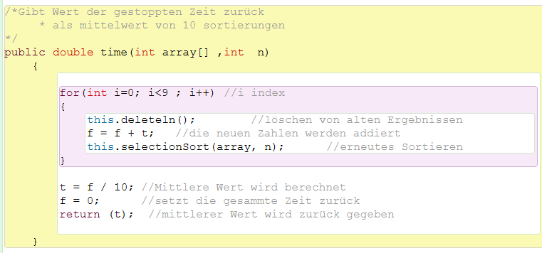
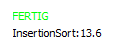

Wie es funktioniert:

Die Zeit kann erstmal ganz simpel gestoppt werden wenn man direkt vor dem Sortieren eine Stoppuhr startet und nach dem Sortieren diese Stoppt.
Nun stellt man bei testen des Programmes jedoch fest, dass die gemessene Zeit (in tausendstel Sekunden) sehr unterschiedlich ist. Selbst bei gleichen Zahlenwerten und gleichen Algorithmen. Es passiert also exakt das gleiche, aber die dafür benötigte Zeit ist sehr unterschiedlich. Hier kommt die Vermutung auf, dass dieser Zeitunterschied an der Auslastung des Computers liegt.
Um dem entgegenzuwirken wird in unserem Programm über eine längere Zeitspanne berechnet. So sagt das Ergebnis deutlich mehr über den Algorithmus aus. Hierzu berechnen wir die Sortierung 10 mal und berechnen den Mittelwert. Diesen Mittelwert kann man dann vergleichen mit dem der anderen Algorithmen.
Auch hierbei können natürlich ungenaue Werte herauskommen. Da es sich auch Hier um einen Wert aus wenigen Sekunden handelt. Wenn man noch genauere Werte erhalten möchte, dann muss die Anzahl von 10 auf eine beliebige angehoben werden. Dann muss der Benutzer natürlich entsprechend länger auf ein Ergebnis warten.

Zeitberechnung von Dagh Zeppenfeld